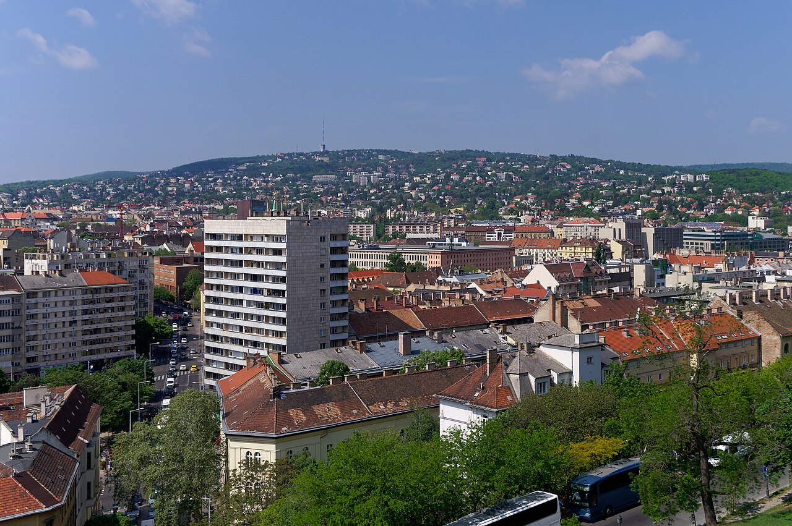

프라하 올로모우츠
일반- 수단
- 기차 · ČD·RegioJet·Leo Express 직행
- 소요
- 약 2시간 15분
- 환승
- 직행
중부유럽 · 숨겨진 소도시
Prague – Olomouc – Brno
프라하 다음 체코. 관광객이 적은 바로크 대학 도시와 와인 지대를 기차로 돕니다.

.jpg?width=960)
.jpg?width=960)
체코 동쪽 모라비아 지방은 프라하보다 한산하고 물가가 낮습니다. 올로모우츠의 유네스코 석주와 브르노의 기능주의 건축, 레드니체–발티체 와인 지대를 묶었습니다. 마지막에 프라하로 돌아가 직항으로 귀국합니다.


지도: © OpenStreetMap 기여자
현지 7박 8일 · 프라하 3박 → 올로모우츠 2박 → 브르노 2박
도착 인천 → 프라하 공항. 도착일은 숙소 주변 위주로 가볍게.
구시가 광장·천문시계 → 틴 성당 → 카를교 → 캄파섬. 해 질 무렵 블타바 강변에서 프라하성 야경.
천문시계는 매 정각에 움직입니다. 광장·카를교는 소매치기에 주의하세요.
숙박: 프라하
프라하성(성 비투스 대성당·황금소로) → 로레타 → 스트라호프 수도원 전망 → 말라스트라나 골목 → 페트린 언덕.
성은 오전 9시 개장 직후가 한산합니다.
숙박: 프라하
요세포프 유대인 지구 → 바츨라프 광장 → 국립박물관 → 비셰흐라드 요새 산책, 저녁에는 체코 맥줏집.
숙박: 프라하
이동 프라하 → 올로모우츠 · 기차 약 2시간 15분 일반
호르니 광장 성삼위일체 석주(유네스코) → 천문시계 → 바로크 분수 6곳 → 성 바츨라프 대성당.
프라하보다 훨씬 한산하고 물가도 낮습니다. 올로모우츠 치즈(트바루슈키)를 맛보세요.
숙박: 올로모우츠
대주교 궁전 → 베즈루초비 공원 산책 → 학생가 카페, 성스러운 언덕(Svatý Kopeček) 성당 다녀오기.
숙박: 올로모우츠
이동 올로모우츠 → 브르노 · 기차 약 1시간 35분 일반
자유 광장 → 양배추 시장 → 성 페테르·파울 대성당 → 슈필베르크 성 → 카푸친 납골당.
대학 도시라 카페와 바가 저렴하고 활기찹니다.
숙박: 브르노
투겐하트 빌라(사전 예약 필수) → 모라비아 카르스트 동굴 또는 레드니체–발티체 와인 지대 당일치기.
숙박: 브르노
이동 브르노 → 프라하 · 기차 약 2시간 35분 일반
브르노에서 프라하(으)로 이동해 출국합니다. 이동 시간에 공항 수속 2~3시간을 더해 항공편을 고르세요. 귀국편은 대부분 다음 날 한국에 도착합니다.
버스(RegioJet)도 2시간 30분 안팎.
마지막 숙박지에서 출국 공항 도시까지의 이동입니다.
국경 체코 한 나라 안에서만 움직입니다.
5·9월
11월, 1~2월
9월 초·중순 모라비아 곳곳에서 포도 수확 축제(vinobraní)가 열립니다.



중기·장기(7~8박) · 3개국 · 추천 5·9·12월
첫 동유럽 여행의 정석. 직항으로 들어가 직항으로 나오고, 세 도시를 레일젯 직행으로 잇습니다.


중기(5~6박) · 2개국 · 추천 5·9·10월
프라하에 동화 같은 중세 마을 하나를 더해 비엔나로 빠져나가는 일주일 코스.


중기·장기(7~9박) · 3개국 · 추천 4·5·9월
비엔나를 건너뛰고 체코·슬로바키아·헝가리 세 나라를 한 철도 노선으로 잇는 실속 코스.


중기(5~6박) · 3개국 · 추천 4·10·12월
도나우강을 따라 세 수도를 잇는 5~7박 단기 코스. 12월 크리스마스 마켓 여행으로 특히 인기.
정보 확인일 2026-11-21